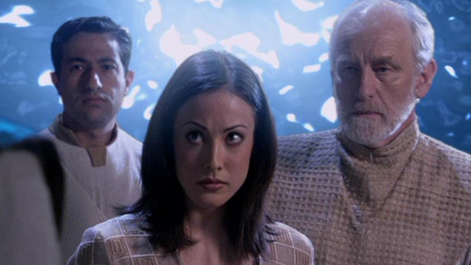

Antikové
Historie
Původní "stavitelé cest", Antikové, byli kdysi rasou vyspělých lidí, kteří byli původními architekty sítě Hvězdných bran. Podle Asgardů se dávno přestěhovali z naší části vesmíru. Ve skutečnosti se Antikové naučili povznést na vyšší úroveň existence, když v Mléčné dráze vypukla velká morová epidemie. Mnoho z nich zemřelo, ale ti, kteří se naučili povznést, odložili své hmotné tělo a získali nový smysl života.
Antikové byli kdysi klíčovými členy aliance čtyř velkých ras v galaxii spolu s Asgardy, Noxy a Furlingy. Antikové žili na Zemi dávno, když sem migrovali ze své vzdálené domovské galaxie (kde se jejich příbuzní Oriové také vyvinuli a naučili povznést). Jedna Antička, Ayiana, byla pohřbena v ledu v Antarktidě po miliony let. Ayiana byla zanechána Antiky, když opustili Zemi s městem Atlantida a přestěhovali se do galaxie Pegasus před pěti až deseti miliony let.
V Pegasu Antikové zaseli lidský život na stovkách světů, stejně jako to kdysi udělali v naší galaxii. Žili tam miliony let - ale pak narazili na planetu, kde spal mocný nepřítel. Antikové nikdy předtím nenarazili na rasu s technologií, která by se rovnala jejich vlastní. Když se Wraithové probudili, začali se živit lidmi na osídlených světech, až zůstala nedotčená pouze Atlantida. Wraithové přinesli své mocné zbraně na město, ale Antikové udrželi svůj štít. Poráženi ponořili velké město do oceánu a poslední z nich utekli branou zpět na Zemi. Tam pravděpodobně žili své životy, vyprávěli příběhy, které daly vzniknout legendě o ztraceném městě. Není známo, zda se tito přeživší někdy povznesli nebo měli nějaký kontakt s povznesenými Antiky. Někteří cestovali na jiné světy v Mléčné dráze, zřejmě včetně vědců jako Janus a Moros (Merlin).
Síť Hvězdných bran dokazuje, že Antikové byli jednou z nejvyspělejších druhů ve vesmíru před mnoha miliony let a měli velké mozky na konstrukci prostředků k rozšíření tisíců Hvězdných bran přes obrovské prostory - dokonce i mimo naši galaxii. Měli dokonce technologii zastavit pohyb času samotného (na několika planetách najednou) a vrátit ho o několik hodin zpět, i když tuto technologii nedokázali zdokonalit. Další pokročilé technologie, které zanechali, zahrnují zařízení schopné měnit lidskou DNA k probuzení pokročilých schopností, léčebné zařízení schopné obnovit život a dokonce oživit neživou tkáň, a další.
Povznesení
Co zůstalo z Antiků, je hierarchie takřka všudypřítomných, éterických bytostí, které po povznesení získaly vyšší morální středisko a cítí, že se musí odstranit z interakce se všemi kulturami pod jejich nehmatatelnou rovinou. Pouhé interakce s jedincem pod nimi porušují jejich zákon. Pomáhání nižším bytostem při objevování povznesení je trestáno vyhnanstvím. Zasahování do okolností, které mění směr civilizace, je zdaleka nejzávažnější přestupek.
Jako trest za porušení tohoto zákona jsou Antikové známí tím, že vyhladili celé civilizace a opustili odpovědného jedince (jako Orlina). Také donutili (nebo se pokusili donutit) přestupníky vrátit se zpět do hmotné formy. Antikové jsou všemi prostředky schopni drasticky měnit průběh událostí podle své vůle. Ale kromě jejich často krutého chování mají Antikové vysoké morální středisko, které řídí většinu jejich činů.
Antikové mají také schopnost objevit se v lidské podobě nebo znovu přijmout hmotnou formu trvale. Znovu povznesení pak vyžaduje pomoc ostatních Antiků.
Povznesené bytosti mají schopnost ovládat počasí, změnit bezmračný den na nebezpečnou bouřku s blesky a dokonce používat blesky jako zbraň proti nepřátelům jak ve vzduchu, tak na zemi.
I když Antikové nejsou fyzicky přítomni, jejich činy viditelně ovlivnily úsilí SG-1 a dalších. Expedice Atlantis žije ve vyspělém městě Antiků, které museli opustit, když Wraithové zaútočili před tisíci lety. Navzdory tomu, že jsou nehmatatelní, jsou stále mocnou silou, s níž je třeba počítat.